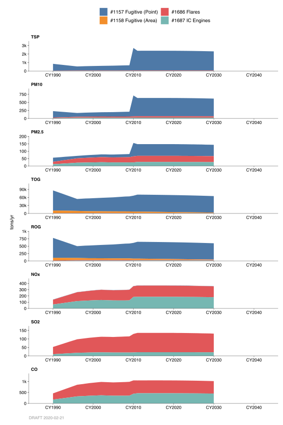
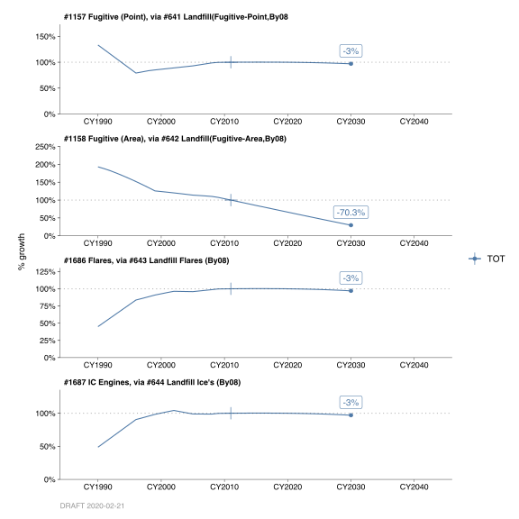
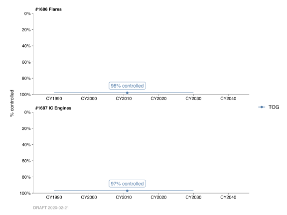

5.2 Landfills, Fugitive Point and Area Sources, Landfill Flares, & Landfill Internal Combustion Engines
5.2.1 Emissions
Introduction
These four categories account for emissions from landfills in the Bay Area. Categories 1157 and 1158 account for organic and greenhouse gas (GHG) emissions (Biogenic CO2, CH4, and N2O) from point and area source landfills, respectively. Category 1157 (Point Source Landfills) also has particulate emissions from activities such as vehicle traffic on unpaved roads, bulldozing, scraping, etc. Categories 1686 and 1687 account for point source criteria pollutant (particulate, organic, NOx, SOx, and CO) and GHG emissions (CO2, Biogenic CO2, CH4, and N2O) from the combustion of landfill gases from flares and internal combustion engines (ICE), respectively, at landfills. Landfill gas may also be combusted in ICE’s outside landfills; however, they are covered in Categories 303 (Reciprocating Engines—Gas Fuels) and 305 (Turbines—Gas Fuels).
Landfill gas production rates and compositions vary greatly, even within a single landfill. There are no comprehensive data leading to the development of generalized emission factors for the Bay Area. Biodegradation takes place over an extended period of time, therefore, waste generated in prior years must be considered for emissions calculations. It is assumed it takes 15 years for maximum biodegradation to take place. However, biodegradation occurs, to a lesser extent, 35 years and beyond. (For emission calculation purposes in Categories 1157 and 1158, 40 years for biodegradation was used.) Prior to the mid-1960’s, it was assumed that 60% of the waste was buried in landfills and 40% of the waste was burned on-site. After that it was assumed the burned waste was diverted to the landfills.
Methodology
Point Sources
It is assumed all active landfills within the District are permitted sources. Inactive landfills less than 30 years old and have greater than one million tons of refuse in place are also considered permitted. These permitted landfills are considered to be point sources; their throughput and emission information has been inventoried in the District’s database since the early 1980’s. Although most point source landfills have collection systems associated with them, there are several landfills that do not have a collection system.
Landfills with Collection Systems
For those landfills with active collection systems, it is assumed that 25% escapes as fugitive landfill gas 75% of the gases are captured and are either destroyed by flaring or burned in an internal combustion engine (ICE) or turbine. Those captured gases that are flared or burned in an ICE or turbine are accounted for and reported to the California Air Resources Board (CARB) under our combustion “C” sources. The following are a list of source codes associated with the criteria pollutant and GHG emissions from landfills with collection systems:
G7145511. The throughput associated with this source code represents the amount of landfill gas collected for a particular year. The District uses the throughput and emission factor data to calculate the fugitive methane and GHG emissions from this source based on the following assumptions:
The landfill gas collection system captures 75% of the total amount of landfill gas generated at the site (AP-42, Chapter 2.4); the remaining 25% of landfill gas is assumed to be fugitive emissions.
Landfill gas, on average, contains 55% methane (CH4), 40% carbon dioxide (CO2), with the remaining 5% nitrogen, oxygen, non-methane organic compounds, etc.
In accordance with the Intergovernmental Panel on Climate Change (IPCC) and EPA GHG inventory procedures, 10% of the CH4 fugitive landfill gas is oxidized into CO2. The N2O emission factor was provided by CARB in their Documentation of California’s Greenhouse Gas Inventory (Category: Managed waste Disposal Sites, Sector: Industrial: Landfills, not specified).
Constants used in the emission factor calculations are as follows:
- The standard molar volume of gases is 387.006 scf/lb-mole.
- The molecular weight of CH4 is 16.043 lbs/lb-mole.
The molecular weight of CO2 is 44.010 lbs/lb-mole.
The CO2 emissions from this source are considered to be biogenic.
Combustion Sources Using Landfill Gas. The assumed 75% landfill gases captured are combusted in the “C” sources by flaring or used as fuel in turbines or IC engines. A 99% destruction efficiency of TOG is assumed for flaring operations; a 97% destruction efficiency of TOG is assumed when landfill gas is burned in an internal combustion engine. A slightly higher TOG destruction efficiency, 99% or more, is achieved in turbines. Particulate, NOx, SOx, and CO emissions are also considered as products of combustion.
Greenhouse gases (CO2, CH4, and N2O) emissions are also calculated from these combustion sources. The CH4 and CO2 emission factors were based from both EPA AP-42 and District sources. The N2O emission factor was based on California Energy Commission data. The CO2 emissions emitted from these combustion sources are considered to be biogenic.
G7145580. This source code represents the fugitive ROG emissions with throughput given as the amount of refuse as tons-in-place. There are no methane or GHG emissions associated with this source.
G7145540. This source code represents fugitive ROG emissions from the on-site handling of contaminated soils. This soil is usually contaminated from gasoline or diesel, and the units associated with this material code are in tons/yr. There are no methane or GHG emissions associated with this source.
G7145466. This source code represents particulate PM10 emissions from landfill activity that includes vehicle traffic on unpaved roads, bulldozing, scraping and dumping activities, wind erosion from land cover, etc. Throughput is based on tons of incoming waste for a particular year.
Landfills without Collection Systems
For those few landfills without collection systems, the following is the source code associated with this type of landfill:
G7159580. The throughput from this source code represents the total tons in place of refuse. The District uses the throughput and emission factor data to calculate the fugitive organic and GHG emissions from this type of landfill based on the following assumptions:
The landfill gas generation rate (LGR) of methane is dependent upon the age of landfill, moisture content, type of refuse, etc. and will vary from landfill to landfill.
The landfill gas composition for these types of landfills is approximately 50% CH4 and 50% CO2. (There is additionally a small amount of ROG, but for calculation purposes assume the equal percentage split.)
The constants used in emission factor calculations are the same as those used for Source Code G7145511.
In accordance with the Intergovernmental Panel on Climate Change (IPCC) and EPA GHG inventory procedures, 10% of the CH4 fugitive landfill gas is oxidized into CO2. The N2O emission factor was provided by CARB in their Documentation of California’s Greenhouse Gas Inventory.
The CO2 emissions from this source are considered to be biogenic.
Area Sources
Area sources consist of inactive landfills that had less than 1 million ton of refuse in place. These landfills were closed many years ago and data is very limited. In 1999, it was estimated area source throughputs comprised 10% of the total waste in place. In future years, this value will decrease linearly because of less contribution from these area sources. In 2008, it was estimated area source throughputs comprised 7.75% of the total waste in place. The assumptions used estimate criteria pollutant (organics) and GHG (CO2, CH4, and N2O) emissions listed below:
The LGR of methane for these closed landfills was 0.030 mcf/year – ton-in-place.
The landfill gas composition for area source landfills is similar to point source landfills without collection systems, namely 50% CH4 and 50% CO2. (There is additionally a small amount of ROG, but for calculation purposes assume the equal percentage split.)
The constants used in emission factor calculations are the same as those used for Source Code G7145511.
The ROG factor for area source landfills is the same as for point source landfills at 0.0089.
In accordance with the Intergovernmental Panel on Climate Change (IPCC) and EPA GHG inventory procedures, 10% of the CH4 fugitive landfill gas is oxidized into CO2. The N2O emission factor was provided by CARB in their Documentation of California’s Greenhouse Gas Inventory.
The CO2 emissions from this source are considered to be biogenic.
Monthly Variation
Estimated daily emissions are assumed to be uniform for all months of the year. This is due to burial/insulation of the refuse that reduces impact of ambient temperature changes, allowing somewhat uniform biodegradation throughout the year.
County Distribution
Point Source Categories (Cat. Nos. 1157, 1686, and 1687)
The data bank system contains information on the county location of each landfill; hence, emissions are distributed to the counties accordingly. It is assumed San Francisco County has had no landfills within their boundaries; therefore, their refuse is transported to the other counties.
Area Source Category (Cat. No. 1158)
The county fractions were based in the number of closed landfills (not accounted for by the District) in the in each county. This data was obtained from the Solid Waste Information System (SWIS) at CalRecycle’s website (http://www.calrecycle.ca.gov).
5.2.2 Trends
History & Growth

Category Nos. 1157 and 1158’s historical and projected growth factors were based on the following:
- Association of Bay Area Government’s (ABAG’s) Population growth profile,
- Percentage of cumulative waste generation attributed to point or area source,
- Per capita waste generation, and
- Overall collection efficiency of the landfill gas.

As mentioned previously, prior to the mid-1960’s, it was assumed 60% of the waste was buried in landfills (point source) and 40% of the waste was burned on-site, as in backyard incinerators. By 1999, it was assumed that 90% of the cumulative waste generation was attributed to point sources, and the remaining 10% was attributed to area sources. By 2030, it is assumed the point source percentage will increase linearly to 97.75% and the area source percentage will decrease linearly to 2.25%
Since the State of California passed a mandate (Assembly Bill 939) that required a reduction in waste generation, per capita waste generation in the District has decreased. Until 1990, this factor was approximately 1.32 tons/person/year; in 2008, it had decreased to 0.79 tons/person/yr. By 2030, it is assumed the per capita waste generation in the District will decrease linearly to 0.70 tons/person/year.
In addition to what was previously mentioned, Categories Nos. 1686 and 1687 historical and projected growth factors were based on the following:
Prior to 1984 (the year Reg. 8, Rule 34 was passed), it was assumed all landfill gases were emitted as fugitive emissions. By 1996, the overall collection efficiency at landfills was assumed to be 75%, with 25% of the landfill gases emitted as fugitive emissions. Between those two years, the collection efficiencies were interpolated.
Control

Currently, Regulation 8, Rule 34 (Solid Waste Disposal Sites) requires that certain landfills process landfill gases through a gas collection and emission control system such that:
There are no leaks that exceed 1000 PPM by volume measured as methane at any component or connector of the landfill gas collection system; and
The collected gases are process in an enclosed ground type flare with a TOG destruction efficiency of at least 98% by weight; or
The collected gases are processed in an energy recovery device or emission control system that reduces the amount of TOG by at 97% by weight.
By: Stuart Schultz Date: January 2014 Base Year 2011